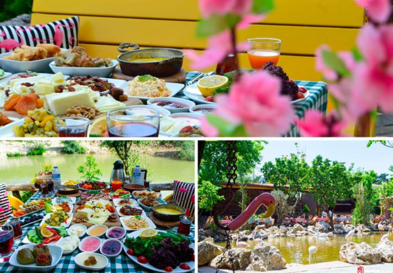

Flamingo Köy Çatalca
Girişleri ücretli olan bu köy içerisinde kendin pişir kendin ye alanları olduğu gibi restoran içerisinde doğa ile iç içe bir ortamda enfes bir kahvaltı keyfi yaşayabilirsiniz. Aynı zamanda çocuklar için de birbirinden farklı aktiviteler sunan bu ortamda son derece keyifli vakitler geçirebilirsiniz. Flamingo köy içerisinde kendin pişir kendin ye mantığı ile oluşturulmuş olan mangal seçeneğiyle etinizi temin ettiğiniz gibi aynı şekilde mangal başında kendiniz pişirebiliyorsunuz. Dilediğiniz takdirde restorandan da etinizi yiyebilirsiniz. Ancak mangal için ekstra bir ücret ödemeniz gerekmekte. Mangal için girişte 200 TL alınıyor. Flamingo köyde hafta içi ve hafta sonu farklı olmak üzere bir giriş ücreti alınmaktadır. Bölgeye giriş ücreti peşin olduğu gibi içeride bir kahvaltı yapmadığınız takdirde bile ödeme yapmak durumundasınız. İşletme politikası gereği hafta içi serpme kahvaltı hafta sonları ise açık büfe kahvaltı seçenekleri ziyaretçilere sunulmaktadır.
Flamingo Köy Kahvaltı
Çatalca’ nın en uğrak mekanlarından biri haline gelmiş Flamingo Köy yılın her dönemi özellikle meşhur kahvaltısı için ziyaret edilmektedir. Köy, ülkemizin en ünlü lezzet duraklarından olan ve doğa ile iç içe zengin menüsü ile misafirlerini ağırlamaktadır. Göl içerisinde birçok flamingo görmeniz mümkün. Flamingo Köy tam olarak ismini buradan alıyor. Sabahın ilk saatlerinde sıcacık bir çay eşliğinde geleneksel bir Türk kahvaltısı ve eşsiz lezzetler sizi burada karşılıyor.
Flamingo Köy Nerede?
Flamingo köy, İstanbul il sınırı içerisinde yer alan Çatalca ilçesinde yer almaktadır. Şehir merkezinden yaklaşık 1-1,5 saat içerisinde ulaşım sağlayabileceğiniz bir konumda yer almaktadır.
Nasıl Gidilir?
Gökçeali Mahallesi Cevizli Sokak’ ta yer alan köye ulaşmak için dilerseniz toplu taşıma araçlarını kullanabilir ya da özel aracınız ile TEM ya da E5 üzerinden köye ulaşabilirsiniz. Köye toplu taşıma aracı ile gitmek istediğinizde Yenibosna metro durağından Çatalca’ya giden otobüsleri tercih edebilir, ardından köy içerisinde ulaşımı taksiyle sağlayabilirsiniz.